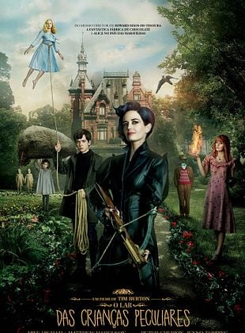

Fantasia/Aventura
Eu gostei muito desse filme, sério. A história é muito diferente e prende bastante, sem falar que os personagens são muito legais. Amei a vibe meio estranha e mágica do filme, com certeza assistiria de novo.
Jacob é um adolescente que, após a morte de seu avô, viaja até uma ilha no País de Gales e encontra um lar misterioso onde vivem crianças com habilidades especiais. Lá, ele conhece Miss Peregrine e descobre que precisa ajudá-las a enfrentar perigos que ameaçam o lugar onde vivem.
A história mistura diferentes épocas. As crianças vivem repetindo o mesmo dia para permanecerem protegidas, fazendo com que o passado e o presente tenham uma relação importante na história.
Os poderes são bem diferentes. Cada criança possui uma habilidade especial, como ficar invisível, controlar plantas, ter força extraordinária ou flutuar.